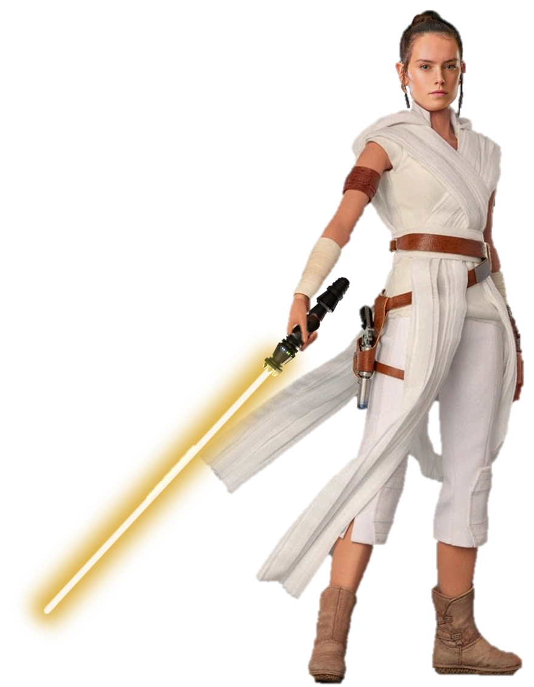

Rey é uma catadora de sucata de Jakku que descobre sua forte conexão com a Força.
Treinada por Luke Skywalker e Leia Organa, ela descobre ser neta do Imperador Palpatine.
Rejeitando sua linhagem sombria, Rey derrota o vilão e adota o sobrenome Skywalker para
honrar seus mentores.